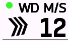
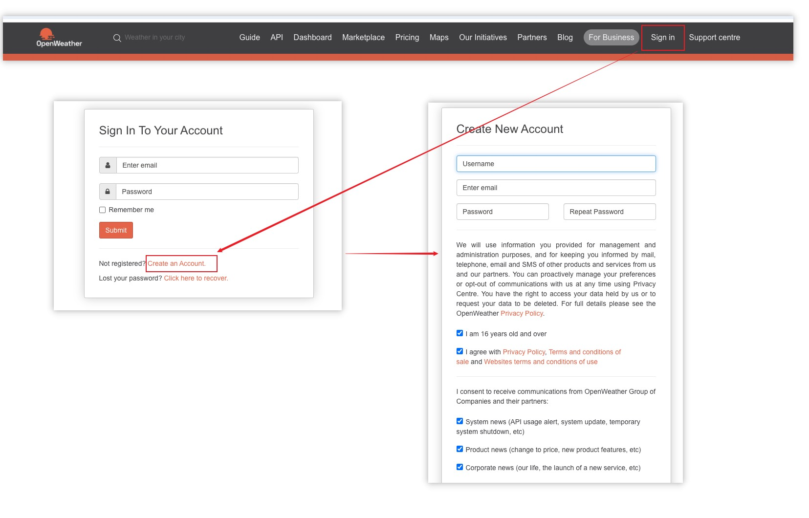
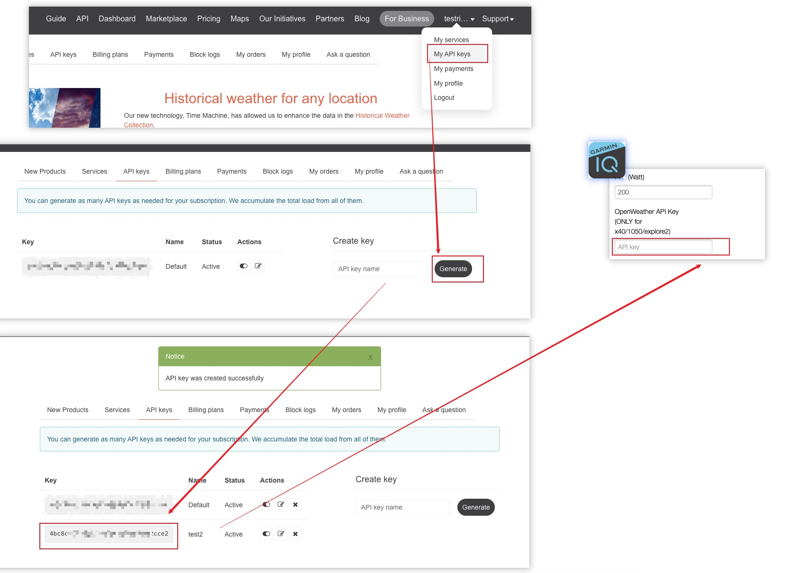

天氣配置¶
本章節介紹如何在ConnectIQ app中進行天氣配置，以便在風力模組中顯示正確的數據。
設備適配性¶
風力模組的數據來源有3種狀態，分別是聯網更新、使用佳明內置的天氣信息、無數據。由於新老設備對不同API的支持程度不同(這是來自佳明層面的限制)，因此不同設備能支持的模式也會有所不同。對於舊版本設備，即使按照後文教程更新OpenWeather API後也無法正確顯示天氣數據。具體支持情況見下表。
| 圖標 | 含義 | 更新頻率 | 位置準確性 | 支持設備 |
|---|---|---|---|---|
| 🟢 | 通過 OpenWeather 聯網更新成功 | 每分鐘 | 當前的經緯度下的天氣信息 | 540 / 840 / 1040 / 1050 / explore2 |
| ⭕ | 通過 OpenWeather 更新失敗，使用Garmin內置天氣數據 | 不確定，由佳明決定 | 距離當前位置最近的機場或氣象站的天氣信息 | 530 / 830 / 1030 及更新型號 |
| 🔴 | 無法獲取任何數據 | - | - | 520 Plus / 820 / explore 及更新型號 |
天氣更新狀態圖標的示例如下：

OpenWeather API 註冊與獲取¶
- 訪問 OpenWeather 官方網站 OpenWeather Map
- 註冊個人版賬號（非For Business）並完成登陸
 - 進入My API Keys頁面，點擊Generate按鈕生成API Key
- 複製API Key並粘貼到ConnectIQ app中的OpenWeather API Key輸入框中
 - 點擊Save按鈕保存設置